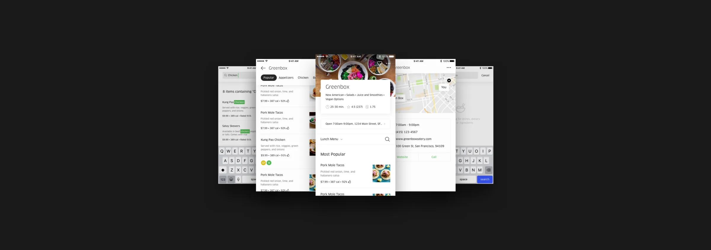
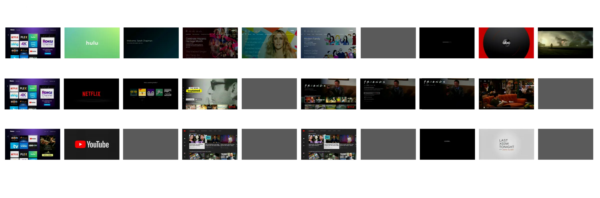
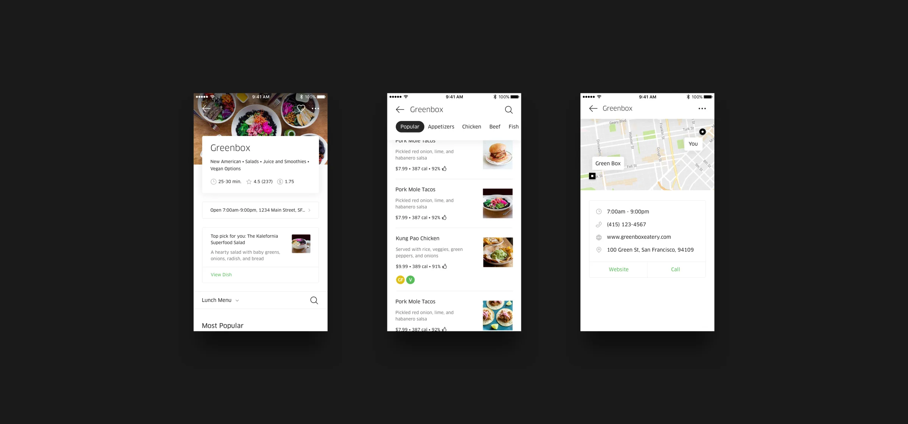
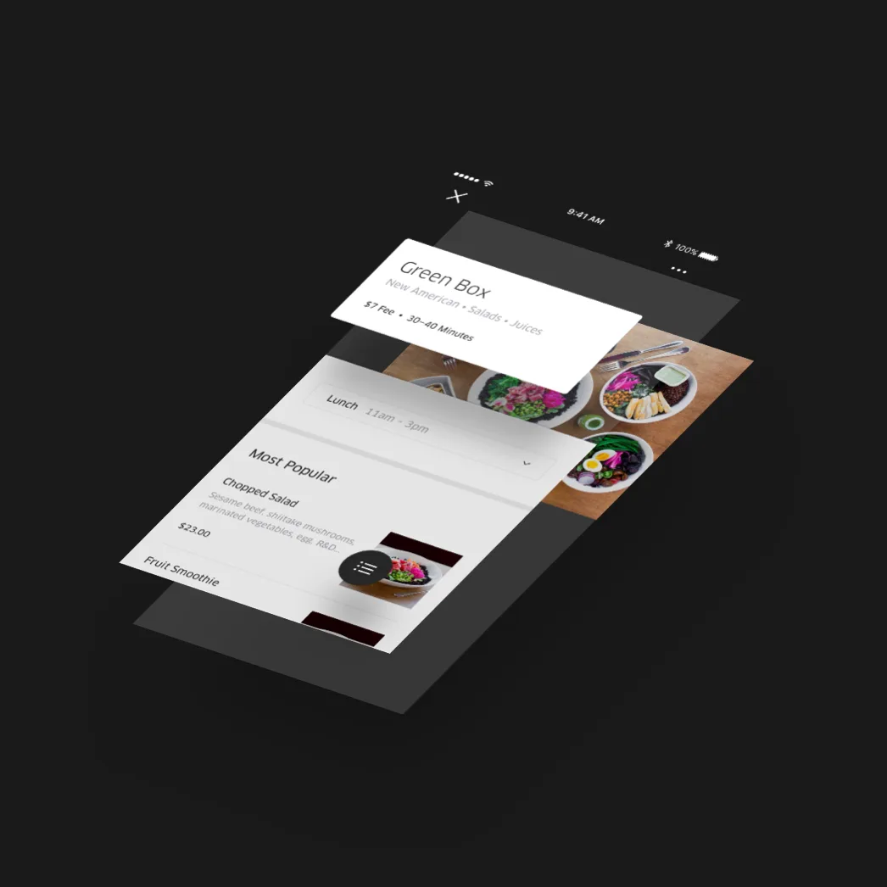

Hulu
Hulu Redesign
- Date
- September 2019
- Overview
Netflix has 250 million subscribers worldwide as of late 2018, Hulu has 25 million. There are many reasons for this massive difference in user count between Hulu and Netflix, but one massive one in my opinion is Hulu's poor user experience design.
This case study outlines my critique and suggested ways of improving Hulu's sub par user experience. I'll do in depth competitor analysis to figure out what others in the space are doing well and what expectations users who jump from one streaming service to another have. I will show you my wireframes, prototypes, and user testing that led me to my conclusions. Lastly I'll take you though my finished re-design of Hulu and any conclusions I've derived from the process.
- Outcome
The redesign was a hypothetical one and I have no affiliation with Hulu. Im simply a dissatisfied user who see's problems that need to be fixed. Hopefully Hulu will see and benefit from my work.
- Tools
- XD, Photoshop, After Effects, Premiere Pro

A flow depicting the new menu framework.
The project was much more than a redesign of the singular menu screen. Rather, it created a new framework of multiple screens to support various permutations of the menu.
We added an entry point at the top of the menu for more information about the restaurant, an overflow menu for additional restaurant-level actions, an area for upsells and promotions (which we coined the amuse bouche, for any foodies out there), overhauled search, and added a menu switcher to alleviate issues with displaying multiple menus based on time of day.

Three core screens from the flow.
To test these changes, I built out a robust prototype utilizing real San Francisco restaurant data from our backend to bulletproof the designs.
In this prototype, I also explored motion concepts for our new header, which introduced a top-level, pill-based navigation that surfaced when a user scrolled to the menu content.
Prototyping motion for our header states.
Our decision to make the navigation top-level was a direct reaction to previous issues with navigation discoverability and our hypothesis that a clear navigation would increase conversion for longer menus.
The navigation would automatically cycle through and highlight navigation anchors as the user scrolled, to help them understand and encourage them to interact with the new paradigm.
Tap-initiated scroll (left) and automatic navigation cycling (right).
Introducing a new header and subpages to the menu framework also required creating guidelines for layering UI and creating depth.
Layering specs were added to the Eats UI kit, while sub page transitions were are also included in the prototype.

An excerpt on z-index from the Eats UI Kit (left) and a subpage transition example (right).